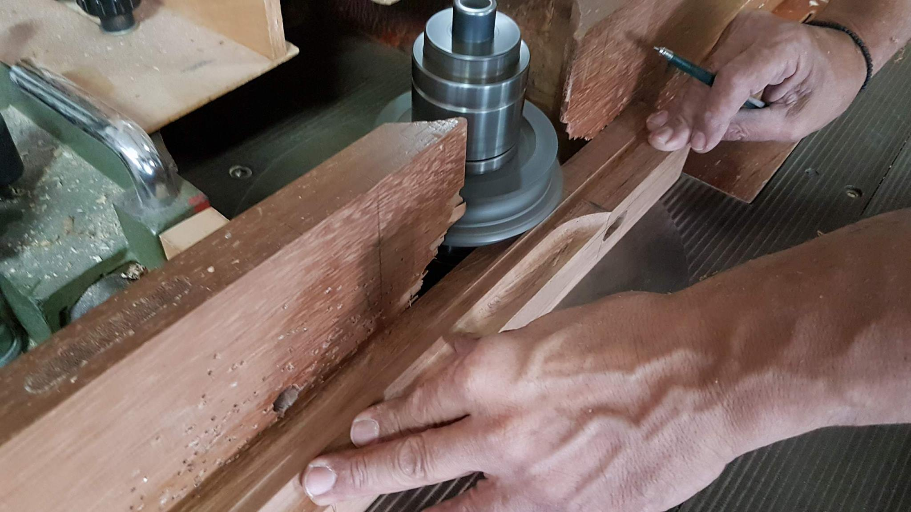
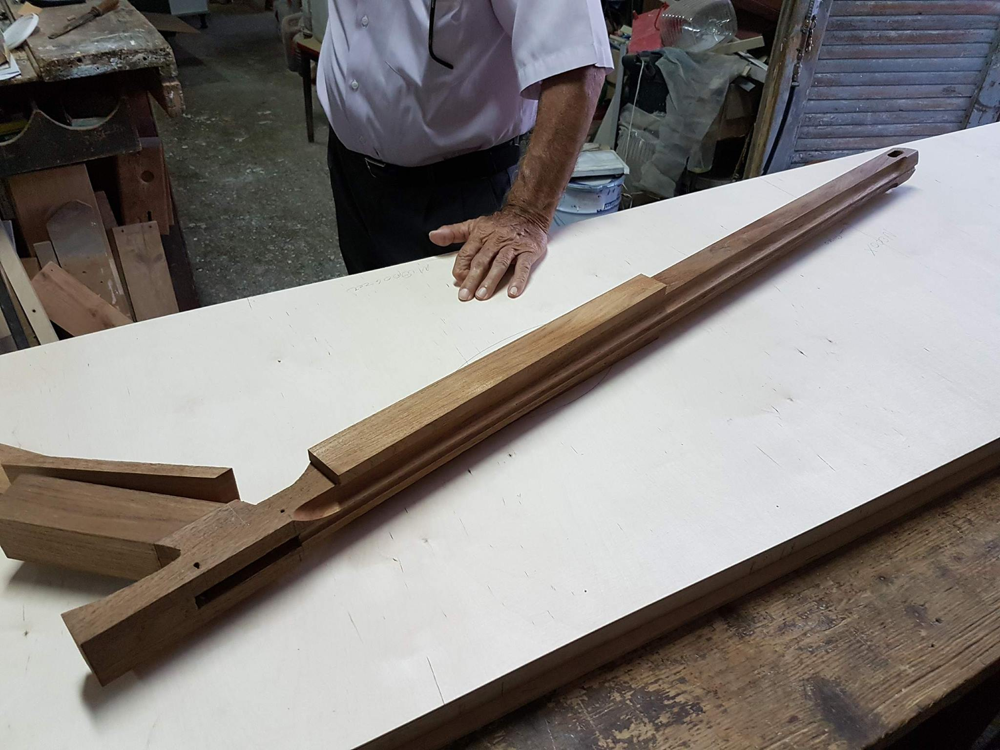
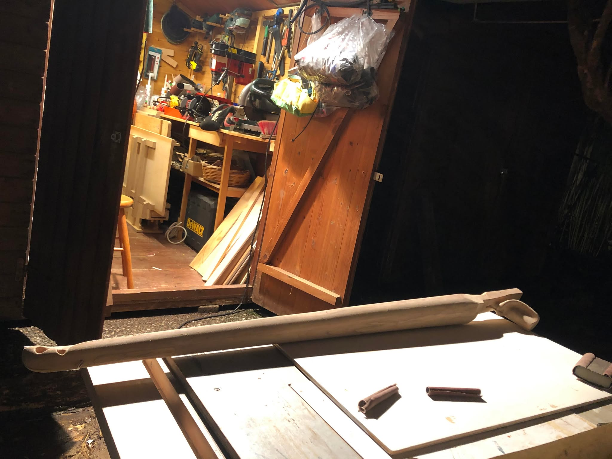
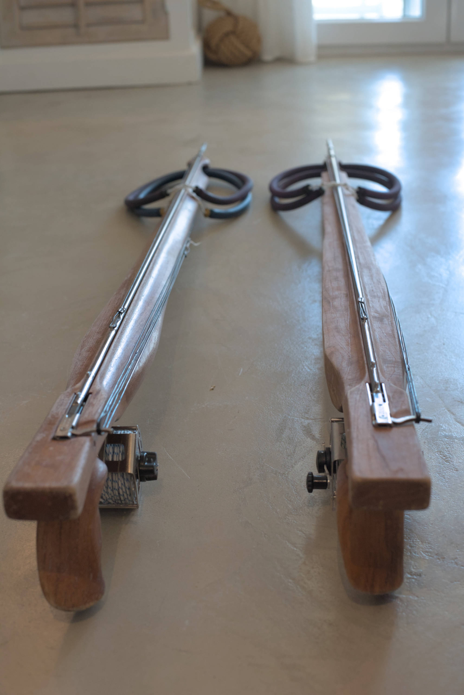
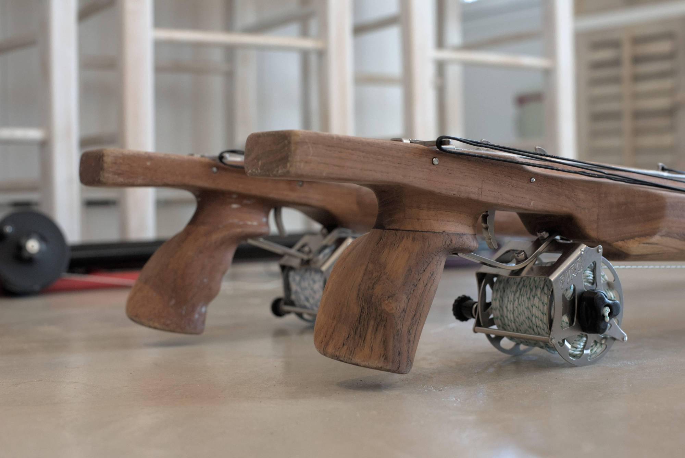
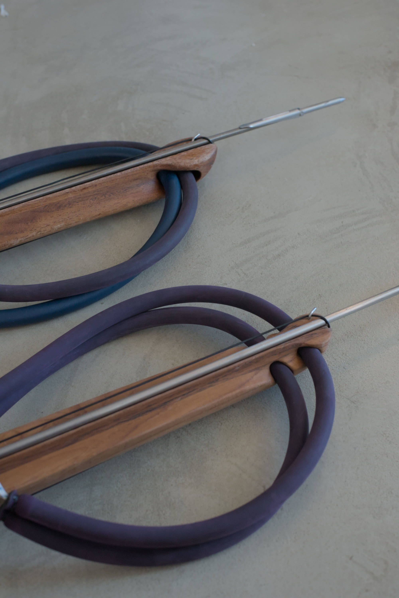

Building a Speargun (Greek)
Καλύτερα αργά απ’ ότι ποτέ, ή τουλάχιστον αυτό λέω στον εαυτό μου πριν γράψω αυτό το ποστ για κάτι που έκανα πριν 7-8 χρόνια! Στα 15-16 μου τότε, είχα μόλις κολλήσει το μικρόβιο του ψαροντούφεκου από τον κολλητό μου τον Γιώργο Η. Τότε πηγαίναμε για ψάρεμα με δικό του εξοπλισμό κάθε ευκαιρία που είχαμε, αρχικά μόνο το καλοκαίρι μέχρι να πάρουμε στολές και μετά όλο τον χρόνο και να είχε 13 βαθμούς η θάλασσα!
Ήθελα να πάρω και δικό μου ψαροντούφεκο, αλλά πιο πολύ απ’ όλα μου άρεσαν τα ξύλινα. Έτσι, αποφάσισα να φτιάξω ένα και να το κάνω ακριβώς όπως ήθελα. Μετά από λίγο καιρό που είχα φτιάξει το πρώτο ψαροντούφεκο, διότι μου άρεσε η όλη διαδικασία, αποφάσισα να φτιάξω και δεύτερο ψαροντούφεκο με πολλές βελτιώσεις για τον φίλο μου τον Γιώργο Η. Ακολουθεί μια μικρή αφήγηση των δύο κατασκευών.
Τα ξύλινα, για να μην χαλάνε στο διαβρωτικό θαλασσινό νερό, πρέπει να φτιαχτούν από ξύλο που μπορεί να αντέξει και να κρατήσει το σχήμα του και να μείνει στη θάλασσα με φορτίο για ώρες. Το πιο κατάλληλο ξύλο είναι το teak, που προέρχεται από χώρες της νότιας Ασίας όπως Ινδία και Μιανμάρ.
Σχεδίασα ένα όπλο 105αρι διλαστιχο με βέργα 140εκ 6.75. Με την βοήθεια ενός φίλου ξυλουργού για να μου κόψει το ξύλο με τα κατάλληλα εργαλεία, άρχισα τη κατασκευή του κορμού του όπλου. Επίσης αγόρασα ένα Dremel για να κάνω ανατομική λαβή, πράγμα που έκανα πρώτα φτιάχνοντας μια λαβή από πλαστελίνη που διαμόρφωσα στο χέρι μου για να βρώ το πιο ιδανικό σχήμα. Πήρε πάρα πολύ χρόνο αλλά το αποτέλεσμα ήταν τέλειο!
Ίσως ακουστεί και λιγάκι τρελό, αλλά μετά από 1-2 χρόνια που άρχισα την κατασκευή του πρώτου όπλου, σε ένα ταξίδι στην Ινδία, βρήκα και αγόρασα άλλο ένα κομμάτι ξύλο ινδικού teak και το κουβάλησα πίσω σπίτι για να φτιάξω ένα δεύτερο ξύλινο, μαθαίνοντας από όλα τα λάθη που έκανα στην κατασκευή του πρώτου! Αυτό ήθελα να το κατασκευάσω για τον φίλο μου τον Γιώργο που θα βοηθούσε επίσης και στην κατασκευή του.
Το ινδικό τεακ ήταν εξίσου καλό και μάλιστα το κομμάτι είχε πολύ όμορφα νερά. Τοποθέτησα το πιο εντυπωσιακό μέρος στη κοιλιά του όπλου για να φαίνεται αλλά και να δίνει όγκο στο όπλο.
Τώρα το μόνο που μένει είναι να τα πάμε για ψάρεμα!





